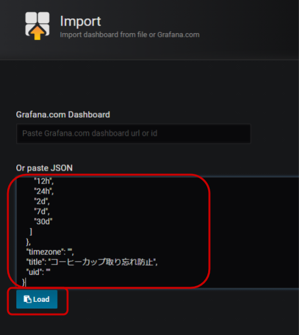

公開日: 2020年12月
レシピ難易度：★★☆☆☆
LCD付きプロトタイピング向けマイコンキット "M5Stack" にモバイルデータ通信機能を加える "3G 拡張モジュール" を組み合わせて、コーヒーマシンに置き忘れたカップをメールでお知らせしてくれるデバイスを作ります。
全体の構成
使用する SORACOM サービス
- データ通信サービス SORACOM Air
- データ収集・蓄積サービス SORACOM Harvest Data
- ダッシュボード作成・共有サービス SORACOM Lagoon
本レシピを行うのに必要な時間、概算費用
本レシピは以下の通りです。
- 必要な時間: 約1時間30分
- 概算費用: 約15,500円
※ 概算費用: ハードウェアや SORACOM を始めとした各種サービスの概ねの費用 (税や送料などの付帯費用や無料枠適用は考慮しないものとしています)
このコンテンツの進め方
ページの内容を読み、また作業を行ったら右下の［Next］を押して次のステップへ進みます。また、［Back］を使って戻ったり、左のナビゲーションメニューでもページの移動が可能です。
左上の［×］を押してコンテンツを終了することができます。また、ページを開きなおすことで再開できます。ページのアドレスはブラウザの［履歴］メニューを利用してください。
本レシピを行うためには以下のものをご用意ください。
ハードウェア
品名 | 数量 | 価格 | 購入先 | 備考 |
M5Stack Basic 3G 拡張ボード セット | 1 | 12,800円 | M5Stack と M5Stack 用 3G 拡張ボードをそれぞれ準備いただいてもレシピを進めることができます。 M5Stack 用 3G 拡張ボードが対応している M5Stack は Basic と Gray の2モデルです。M5Stack FIRE は非対応ですのでご注意ください。 | |
SORACOM 特定地域向け IoT SIM (plan-D / データ通信のみ / nanoSIM サイズ) | 1 | 852円 | サイズは nano をお求めください。「マルチカット」には nano サイズが含まれています。 | |
対辺1.5mm 六角レンチ(ドライバー) | 1 | 約410円 | M5Stack 用 3G 拡張ボードへ SIM を挿す際にボードの取り付け・取り外しに使用します。 | |
M5Stack用ToF測距センサユニット | 1 | 約1,430円 | 光を利用した距離センサーです。取り付け用の Grove ケーブルが1本添付されています。 | |
開発用パソコン | 1 | ― | ― | Arduino IDE と M5Stack 開発環境が整っていること。 セットアップ方法は 【SORACOM ハンズオン】M5Stack 開発環境セットアップ (Windows / macOS 共通) (全体で約90分) をご覧ください。 |
(必要な方のみ) USB 変換アダプタ | 1 | ― | ― | パソコンに USB Type-A ポートがない場合に準備してください。 1A 以上の電力が供給できるものを利用してください。(USB 3.0以上に対応していれば概ね安心です) |
(必要な方のみ) USB Type-C ↔ Type-C ケーブル | 1 | ― | ― | パソコンに USB Type-A ポートが用意できず、また、USB 変換アダプタも用意できない場合に準備してください。 |
※ 金額はレシピ作成時となります。ソラコムで販売している金額は税抜き・送料別です。その他は参考価格となります。
その他必要なもの
必要なもの | 費用 | 作成方法など |
SORACOM アカウント | 無料※ |
※ アカウント作成・維持の費用の料金です。
設置に利用したもの
本レシピで設置時に利用した部材です。必須ではありませんがご参考にお使いください。
品名 | 数量 | 備考 |
コーヒーマシン | 1 |
バリスタ i[アイ]を利用しました。 |
USB 型 AC アダプタ | 1 | M5Stack への電源供給用です。1A以上供給できるものが望ましいでしょう。 |
USB Type-C ケーブル | 1 | M5Stack への電源供給用です。 |
両面テープ | ― | ToF 距離センサーの固定用です。 |
M5Stack 用 3G 拡張ボード(以下、3G拡張ボード)には SIM スロットが備わっており、ここに SIM を入れることで 3G 通信が可能となります。 SIM の取り付け・取り外しは 3G拡張ボードをケースから取り外す必要があります。
3G拡張ボードをケースから取り外す
3G拡張ボードの四隅にあるネジを取り外します。ネジは紛失しないようにしてください。

SIM を取り付ける（取り外し方法含む）
SIM のサイズは nano です。取り付けはSIMをスロットに挿入したら「カチッ」と音が鳴るまで押し込みます。音が鳴ったら完了です。取り外しはSIMを奥まで押し込み「カチッ」と音が鳴ればSIMが出てきますので取り外しできます。

3G拡張ボードをケースに取り付ける
再度3G拡張ボードをケースに取り付けます。取り付け向きはピンが外側 (ケースから飛び出るように) します。逆向き (ピンがケースの内側を向いてしまっている) には取り付け内でください。
最後はネジで固定します。
重ねる
取り付け終わったら一番下から「BOTTOM」「3G拡張ボード」「Core※」と重ねていきます。
※ Core = M5Stack の LCD(モニター)やボタンがついているモジュール
以上で3G 拡張ボードへの SIM 取り付け作業は完了です。
3G 拡張ボードを使って SORACOM Air によるセルラー通信を行い、3G 拡張ボードの動作確認を行います。
セルラー通信ライブラリのインストール
3G 拡張ボードで利用できる通信ライブラリをインストールします。今回は TinyGSM というオープンソースライブラリを利用して、世界時計を M5Stack で表示してみます。
Arduino IDE を開き、［スケッチ］>［ライブラリをインクルード］>［ライブラリを管理...］をクリックします

※ 画面は macOS ですが、Windows も同様です。
"TinyGSM" をインストールする
ライブラリマネージャの一覧から TinyGSM (by Volodymyr Shymanskyy) を選んで［インストール］をクリックします。
バージョンはインストール時における最新バージョンを選んでください。

インストールが終了したら［閉じる］をクリックします。
World Time API を取得して表示するスケッチ
動作テストを兼ねて世界時計を API で提供している World Time API から日時を取得して表示します。
Arduino IDE を起動し［ファイル］>［新規ファイル］を開くと void setup() { から始まる「空のスケッチ」が表示されます。
一度スケッチの内容を削除してから、後述のスケッチで置き換えてください。

m5stack_3gextboard_worldclock.ino
/*
* Copyright (c) 2020 SORACOM, INC.
* Released under the MIT license
* https://opensource.org/licenses/mit-license.php
*/
#include <M5Stack.h>
#define TINY_GSM_MODEM_UBLOX
#include <TinyGsmClient.h>
TinyGsm modem(Serial2); /* 3G board modem */
TinyGsmClient ctx(modem);
void setup() {
Serial.begin(115200);
M5.begin();
M5.Lcd.clear(BLACK);
M5.Lcd.setTextColor(WHITE);
M5.Lcd.println(F("M5Stack + 3G Module"));
M5.Lcd.print(F("modem.restart()"));
Serial2.begin(115200, SERIAL_8N1, 16, 17);
modem.restart();
M5.Lcd.println(F("done"));
M5.Lcd.print(F("getModemInfo:"));
String modemInfo = modem.getModemInfo();
M5.Lcd.println(modemInfo);
M5.Lcd.print(F("waitForNetwork()"));
while (!modem.waitForNetwork()) M5.Lcd.print(".");
M5.Lcd.println(F("Ok"));
M5.Lcd.print(F("gprsConnect(soracom.io)"));
modem.gprsConnect("soracom.io", "sora", "sora");
M5.Lcd.println(F("done"));
M5.Lcd.print(F("isNetworkConnected()"));
while (!modem.isNetworkConnected()) M5.Lcd.print(".");
M5.Lcd.println(F("Ok"));
M5.Lcd.print(F("My IP addr: "));
IPAddress ipaddr = modem.localIP();
M5.Lcd.print(ipaddr);
delay(2000);
}
void loop() {
M5.update();
M5.Lcd.clear(BLACK);
M5.Lcd.setCursor(0, 0);
M5.Lcd.println(F("World Clock from worldtimeapi.org"));
/* HTTP GET example */
if (!ctx.connect("worldtimeapi.org", 80)) {
Serial.println(F("Connect failed."));
return;
}
Serial.println(F("connected."));
/* send request */
ctx.println("GET /api/timezone/Asia/Tokyo.txt HTTP/1.0");
ctx.println("Host: worldtimeapi.org");
ctx.println();
Serial.println("sent.");
/* receive response */
while (ctx.connected()) {
String line = ctx.readStringUntil('\n');
Serial.println(line);
if (line == "\r") {
Serial.println("headers received.");
break;
}
}
char buf[1 * 1024] = {0};
ctx.readBytes(buf, sizeof(buf)); /* body */
ctx.stop();
M5.Lcd.println(buf);
delay(1000 * 10);
}マイコンボードに書き込む
M5Stack を PC に取り付けた後、Arduino IDE で ボタンをクリックします。ボードへの書き込みが完了しました。と表示されたら正常終了です。
ボタンをクリックします。ボードへの書き込みが完了しました。と表示されたら正常終了です。
実行の様子
最初にモデムの型番や IP アドレスを表示した後に World Time API から取得したデータを表示します。


うまく動作しなかった場合
症状 | 考えられる原因 | 対策 |
| 3G 拡張ボードで内部エラーが発生している可能性がある | カスタマーサポートへご連絡ください。 |
| 電力が不足している | USB Type-C ケーブルを別のものに変えてみてください。 |
SIM が取り付けられていない。(もしくは SORACOM IoT SIM ではない) | SORACOM 特定地域向け IoT SIM plan-D を取り付けてください。 | |
電波が圏外もしくは微弱である可能性がある | 窓際等、通信条件が良い環境でお試しください。 | |
SIM が SORACOM に登録されていない ※ SORACOM ユーザーコンソールで確認できます ( "登録されてない" 事が確認できます) | 発注済みの SIM を登録する もしくは 通販サイトやイベント等で入手した SIM を登録する を行ってください。 | |
SIM の「状態」が "準備完了" となっている（ "使用中" でない） ※ SORACOM ユーザーコンソールで確認できます | 当該 SIM のチェックボックスをチェックしてから［操作］>［使用開始］をクリックして "使用中" に変更してください。 |
以上で M5Stack の開発環境から M5Stack 本体と 3G 拡張ボードの動作確認が完了しました。
ToF 距離センサーは Grove ケーブルを使用して M5Stack 横の Grove ポートに接続します。
M5Stack からはUSBケーブルを抜き、電源がOFFの状態で作業してください。(USB ケーブルを抜いても内蔵バッテリーで動く場合がありますが、その時は M5Stack 側面の電源ボタンを素早く2回押してください)
ToF 距離センサー側

M5Stack 側

ToF センサーは M5Stack の底面に取り付けるのが良いでしょう。私は両面テープで取り付けました。
取り忘れをセンシングするスケッチを M5Stack へ書き込みます。
ToF 距離センサーライブラリのインストール
M5Stack で ToF 距離センサーを利用するためのライブラリをインストールします。今回はVL53L0X library for Arduinoというオープンソースライブラリを利用します。
Arduino IDE を開き、［スケッチ］>［ライブラリをインクルード］>［ライブラリを管理...］をクリックします
※ 画面は macOS ですが、Windows も同様です。
"VL53L0X" をインストールする
ライブラリマネージャの一覧から VL53L0X (by Pololu) を選んで［インストール］をクリックします。
バージョンはインストール時における最新バージョンを選んでください。
インストールが終了したら［閉じる］をクリックします。
JSON 処理ライブラリのインストール
M5Stack で JSON 形式の構造化テキストを処理するためのライブラリをインストールします。今回はArduinoJsonというオープンソースライブラリを利用します。
Arduino IDE を開き、［スケッチ］>［ライブラリをインクルード］>［ライブラリを管理...］をクリックします
※ 画面は macOS ですが、Windows も同様です。
"ArduinoJson" をインストールする
ライブラリマネージャの一覧から ArduinoJson (by Benoit Blanchon) を選んで［インストール］をクリックします。
バージョンはインストール時における最新バージョンを選んでください。

インストールが終了したら［閉じる］をクリックします。
HTTP 通信ライブラリのインストール
M5Stack で HTTP 通信を行うライブラリをインストールします。今回はArduinoHttpClientというオープンソースライブラリを利用します。
Arduino IDE を開き、［スケッチ］>［ライブラリをインクルード］>［ライブラリを管理...］をクリックします
※ 画面は macOS ですが、Windows も同様です。
"ArduinoHttpClient" をインストールする
ライブラリマネージャの一覧から ArduinoHttpClient (by Arduino) を選んで［インストール］をクリックします。
バージョンはインストール時における最新バージョンを選んでください。
インストールが終了したら［閉じる］をクリックします。
M5Stack へ書き込むスケッチを入手する
Arduino IDE を起動し［ファイル］>［新規ファイル］を開くと void setup() { から始まる「空のスケッチ」が表示されます。
書き込むスケッチは m5stack_tof_ranger2.ino です。(約280行ほどあるため、リンク先からスケッチを入手してください)
一度スケッチの内容を削除してから m5stack_tof_ranger2.ino の内容と置き換えてください。
※m5stack_tof_ranger2.ino の基となっている Gist (コード共有サイト) の URL はこちらです。
マイコンボードに書き込む
M5Stack を PC に取り付けた後、Arduino IDE でボタンをクリックします。ボードへの書き込みが完了しました。と表示されたら正常終了です。
以上で書き込みは完了です。
書き込みが終わったら、M5Stack から USB ケーブルを外し、電源を OFF にしておきましょう。
M5Stack に取り付けた SIM に「SORACOM Harvest Data」の設定を行います。
SORACOM ユーザーコンソールの［Menu］>［SIM 管理］とクリックして SIM 管理画面を開きます。

M5Stack に取り付けた SIM) にチェックを付け、［操作］>［所属グループ変更］とクリックします。

「新しい所属グループ」のプルダウンボックスをクリックした後、［新しいグループを作成...］をクリックします。

「グループ作成」のグループ名を入力して［グループ作成］をクリックします。
項目 | 例 | 備考 |
グループ名 |
| 自由に入力可能です。日本語も設定可能です。 |
SIM 管理画面で割り当てたグループ名をクリックします。

［SORACOM Harvest Data 設定］をクリックして設定ができるように開きます。

「SORACOM Harvest Data 設定」で以下のように設定します。
項目 | 設定値 | 備考 |
（スイッチ） | ON | スイッチはクリックすることで OFF から ON に切り替えることができます。 |
その後［保存］をクリックしてください。
その後表示される「SORACOM Harvest Data が有効になっています」のダイアログでは［OK］をクリックしてください。
以上で「SORACOM Air メタデータサービス」と「SORACOM Harvest Data」の設定が完了しました。
デバイスからのデータを SORACOM Harvest Data で確認します。
SORACOM ユーザーコンソールの［Menu］>［SIM 管理］とクリックして SIM 管理画面を開きます。
M5Stack に取り付けた SIM) にチェックを付け、［操作］>［データを確認］とクリックします。
表示された画面で［自動更新］を ON にします。
この表示された画面が SORACOM Harvest Data の画面となります。
設置後、M5Stack に USB ケーブルを接続して電源を ON にします
実際に設置してみましょう。以下のように、コーヒーカップとの距離が計測しやすい位置に、ToF 距離センサーが向くように設置します。
この時、コーヒーカップの出し入れがしやすいことも合わせて確認しましょう。
その後、M5StackにUSB ケーブルを接続して電源をONにします。既に電源がONだった場合、または、USBケーブルを接続しても電源がONにならない場合は、電源ボタンを 1 回押してみてください。リセットがかかり、電源がONになります。
M5Stackに表示される画面
M5Stack の 電源 ON から 50~60秒程度すると、下記のような画面が表示されデータがクラウドに送信され始めます。

コーヒーカップを置いて計測をしてみる
先ほど書き込んだスケッチは3分毎にM5Stack とコーヒーカップの距離を mm でデータ送信するようになっています。実際にコーヒーカップを置いてみて、データが送信されるか確認します。
SORACOM Harvest Data では以下のように確認できます。コーヒーカップを置いて30分ほど経過した様子です。
コーヒーカップとの距離が遠すぎる(700mm以上)もしくは近すぎる(15mm以下)の場合は Distance avg. は "nan" という値となり、クラウドへのデータ送信はされません。
以上でデータ送信の確認は終了です。
SORACOM Harvest Data に蓄積されたデータを SORACOM Lagoon で活用していきます。
SORACOM Lagoon 用語解説
ここで SORACOM Lagoon で使われる用語を解説します。
用語 | 意味 |
プラン | SORACOM Lagoon の契約プランです。機能と料金が異なります。SORACOM Lagoon のご利用料金に機能や料金の比較表があります。 |
メトリクス (メトリック) | データが格納されている先です。SORACOM Lagoon では以下の4つの中から選び、その中からノード(SIMや回線)を選択します。
|
データソース | メトリクスの参照先です。SORACOM Lagoon では "Harvest" (= SORACOM Harvest) を選ぶとメトリクスが展開されます。 Grafana ではテスト用のランダムデータが表示されます。 |
パネル | パネルはデータを表示する領域です。データソースとメトリクスを指定すると、そのメトリクス(たとえばSIM)のデータをパネルで使えるようになります。 様々なパネルが存在します。 |
ダッシュボード | 複数のパネルを束ねて「1枚の画面」にしたものがダッシュボードです。共有の単位となります。 |
SORACOM Lagoon ユーザー (Lagoon ユーザー) | SORACOM Lagoon へログインするためのユーザー(IDとパスワードの組) SORACOM ユーザコンソールへのログインとは異なるユーザ一覧となり、皆さん自身で登録・削除が可能です。ダッシュボードやパネルを編集できる「編集可能」と表示専用の「読み取り」の2段階の権限を設定できます。 作成可能数はプランによります。 |
データリフレッシュ | SORACOM Harvest から SORACOM Lagoon へデータが反映される事、もしくは反映タイミングとなります。反映タイミングはプランによります。 |
アラート | メトリクスのデータに対して条件を設定し、その条件を満たしたら通知を行う仕組みの事です。 |
SORACOM ユーザーコンソールの［Menu］>［データ収集・蓄積・可視化］>［SORACOM Lagoon］とクリックします。

［SORACOM Lagoon の利用を開始する］をクリックします。

プランのうち［Free］を選択したあと［続行する］をクリックします。

SORACOM Lagoon ユーザーの初期ユーザーに設定するパスワードを入力した後、［利用開始］をクリックします。
SORACOM Lagoon の有効化に成功すると、以下のように SORACOM Lagoon コンソールへのリンクと、Lagoon ユーザーの一覧が管理できるようになります。
この画面を SORACOM Lagoon 管理画面と呼びます。

SORACOM Lagoon 管理画面は、SORACOM Lagoon が有効化されている間は ［Menu］>［データ収集・蓄積・可視化］>［SORACOM Lagoon］で表示する事ができます。
SORACOM Lagoon 管理画面を表示したあと、［SORACOM Lagoon console にアクセス］をクリックします。
※ SORACOM Lagoon 管理画面は ［Menu］>［データ収集・蓄積・可視化］>［SORACOM Lagoon］で表示する事ができます。

SORACOM Lagoon へログインします。
メールアドレス (SORACOM ユーザコンソールへログインする際のメールアドレス) と、SORACOM Lagoon 初期ユーザ作成時に利用したパスワードでログインします。
ログインに成功すると、以下のような画面が表示されます。これが SORACOM Lagoon ログイン直後の画面です。ここから「ダッシュボード」や「パネル」を作成していきます。
通知先を設定します。
アラートアイコン にカーソルを乗せると表示される「アラート」メニューから［通知チャンネル］をクリックします。
にカーソルを乗せると表示される「アラート」メニューから［通知チャンネル］をクリックします。

［チャンネルを作成］をクリックします。
「Alerting」では以下の通りに入力します。
項目 | 内容 | 備考 |
名前 |
| 任意の名称で構いません。 |
タイプ | ― | |
Email addresses | 通知の送付先メールアドレス | ; で複数指定が可能です。 |
入力し終わったら［保存］をクリックします。
以下のように表示されていれば成功です。

あらかじめ設定が済んでいるテンプレートを使ってダッシュボードを作成します。
ダッシュボードアイコンにカーソルを乗せると表示される「ダッシュボード」メニューから［管理］をクリックします。

［Import］をクリックします。

［Or paste JSON］のテキストボックスへ、以下のテキストを入力(貼り付け)ます。
貼り付けるテキストは lagoon_template_for_m5stack_tof_ranger2.json です。(約200行ほどあるため、リンク先から定義を入手してください)
※lagoon_template_for_m5stack_tof_ranger2.json の基となっている Gist (コード共有サイト) の URL はこちらです。

貼り付けたら［Load］をクリックします。
Options では以下のようになっていることを確認します。
項目 | 内容 |
Name | コーヒーカップ取り忘れ防止 |
フォルダ | General |
Unique Identifier (uid) | auto generated |
確認できたら［Import］をクリックします。
以下のように表示されていれば成功です。
"コーヒーカップとの距離履歴" >［編集］をクリックします。
"メトリック" タブで読み込むデータを設定します
"メトリック" タブが表示されている（もしくは "メトリック" タブを選択した後）、以下の設定を行います。
設定項目 | 値 |
データソース | default |
"A metric" と表示されている行の左から2番名のプルダウン | M5Stack に取り付けた SIM |
"A metric" と表示されている行の一番右のプルダウン | avg_mm |
選んだ時点で、全データが表示されます。
"アラート" タブをクリックした後［通知］をクリックします。
［送り先］のをクリックし、先ほど作成した通知先 (例に沿っているなら email)を選択します。
画面右上のダッシュボードに戻る ボタンをクリックします。
ボタンをクリックします。

画面右上の をクリックすることでこれまでの作業を保存できます。
をクリックすることでこれまでの作業を保存できます。

［保存］で保存します。

以上で全ての設定が終了です。
M5Stack がコーヒーカップの存在を検出すると、「Alerting」と書かれたメールが通知チャンネルで設定したメールアドレスに届きます。
また、コーヒーカップを取ると以下のように「OK」と書かれたメールが届きます。
ここからは、これまで紹介していなかった機能や、本番に向けた設定を紹介します。
アラートとなる距離の設定方法
本レシピの仕組みはコーヒーカップまでの距離を計測することで有無を判定しています。
本レシピの標準設定はM5Stackからカップまでの距離が25mm以上 70mm以下であるときに「ある」と判定するようになっています。
下の図における赤い帯が「ある」と判定される距離範囲となります。
一方、利用するコーヒーメーカーやカップのサイズなど、設置条件は様々であるため調整が必要となります。判定は SORACOM Lagoon の「アラート」機能であり、検出条件はここで変更できます。
LCD (液晶)画面の消灯
M5Stack の LCD 画面は C ボタン(一番右のボタン)を押すことで、消灯することができます。消灯後、再度 C ボタンを押すと点灯します。
計測モード
ToFセンサーの動作を確認するための「計測モード」が実装されています。
M5Stack の A ボタン(一番左のボタン)を押しながら、電源ボタン(側面のボタン)を押してください。Skip fetching config from Cloud と表示され、すぐにメイン画面に移行します。(A ボタンはこの時点で離すことができます。
Notification のカウントダウンはされますが、クラウドとの通信は行いません。
クラウドとの通信を行うモードにするためには、電源ボタンを押してリセットしてください。
本レシピでは費用がかかるサービスを利用しています。
本項をよく読み、必要な操作や解除作業を行うようにして、想定外の費用が掛からないようにしてください。
費用について
ここで記載している金額は全て税別、送料別となります。
SORACOM プラットフォームの利用料金
サービス／機能 | 料金 |
(今回の利用であれば 1MB 以内で収まる範囲) | |
| |
今回は Free プラン(無料)を使用しました。 |
グループ解除
SORACOM Harvest Data 等、「機能が有効になっているグループに所属している SIM × 費用」となっているサービスにおいては、「機能を OFF にする」することで費用の発生を抑えることができます。またもう1つの方法として「グループに所属している SIM の数を減らす(= 解除する)」事でも費用を抑える事ができます。
グループ解除の方法はグループからの解除 (JP)をご覧ください。
SORACOM Harvest Data のデータ削除（任意）
SORACOM Harvest Data は基本的にはデータ保管料は無料※です。そのため、保存しておいても害はありませんが、デモ等で利用する際にはデータを綺麗にしておく必要が出てくるため、データ削除について解説します。
※発生から40日を超えたデータは削除されます。40日以上データを保管したい場合はデータ保持期間延長オプション利用料金をご利用ください。
SORACOM Harvest Data 画面 (［操作］>［データを確認］) のデータテーブルで、削除したいデータのチェックボックスを付けた後に［削除］をクリックします。表示されたダイアログで改めて［削除］をクリックすると、削除されます。
※ 複数のデータにチェックをつければ一括で削除可能です。

データの復元はできませんのでご注意ください。
SORACOM Lagoon の解約
SORACOM Lagoon はオンラインで解約が可能です。 Free プランであれば有効化しておいても費用は発生しませんが、長期に渡って利用しない場合には解約も選択いただけます。
解約の方法はSORACOM Lagoon の解約(JP)をご覧ください。
本レシピでは、M5Stack と 3G 拡張ボードと ToF 距離センサーを組み合わせた「コーヒーカップ取り忘れ通知デバイス」を作りました。
「距離」によるセンシングは、計測される側（今回はコーヒーカップ）の改造をせずとも物体の有無を簡単に判定できることから、応用例も多く考えられるのではないでしょうか？
今回は ToF 距離センサーを利用しましたが、その他にも超音波を利用した距離センサーもあります。センシングする対象や環境に応じて使い分けることもできるでしょう。